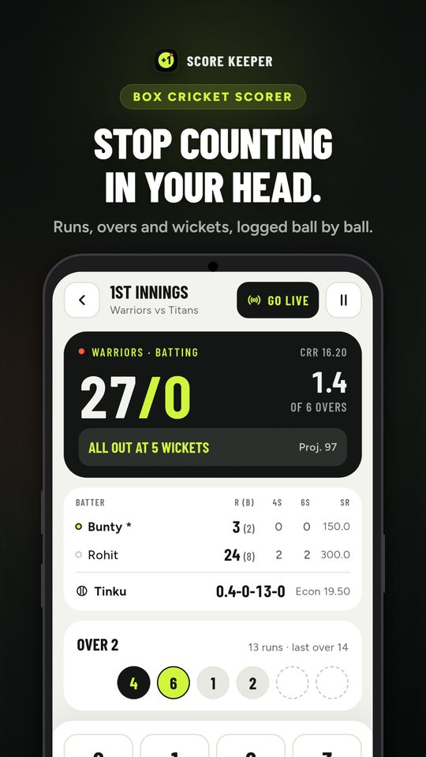
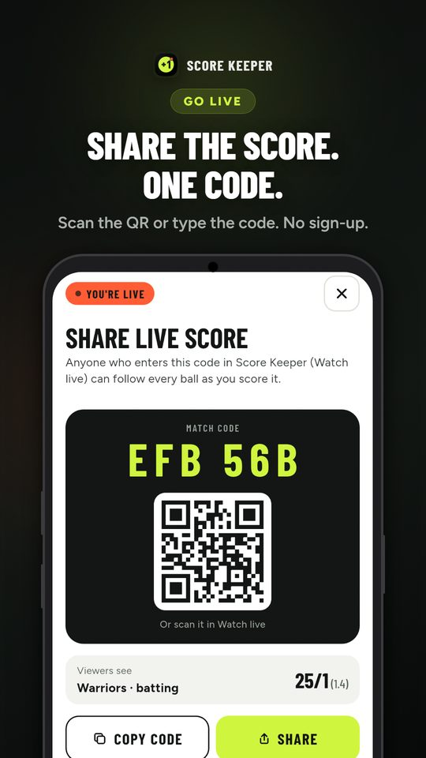
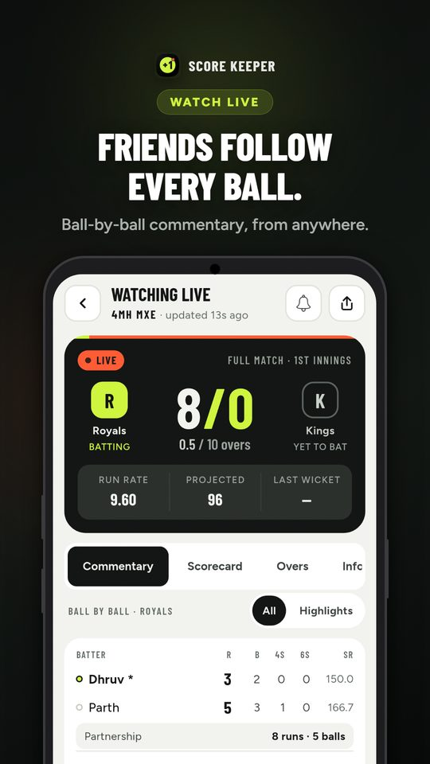
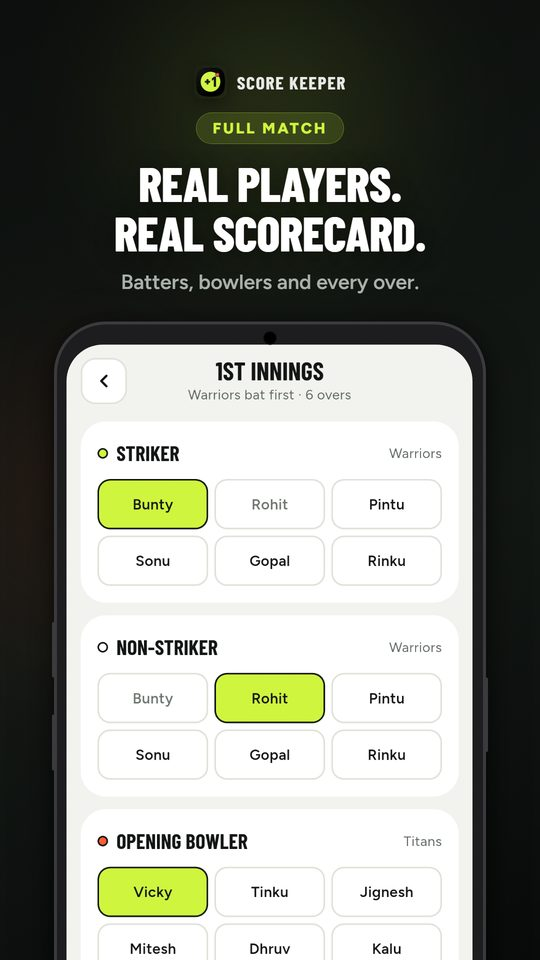
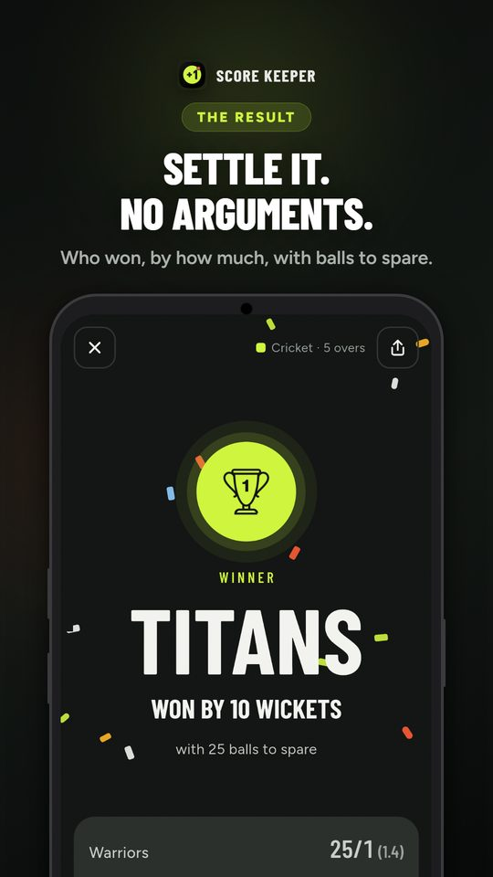

Stop counting
in your head.
Log every run, over and wicket. Share the live score with one code. Works with no signal, and needs no account.
Get it on Google PlayAndroid





Built for the box
Nobody should have to remember the overs while they are also batting.
Quick match
Just team names and overs. Tap runs, wickets and extras ball by ball.
Full match
Add players, pick openers and bowlers, and get a full scorecard with batter and bowler figures.
Live scores
Tap Go live and share a 6-character code or QR. Friends follow every ball from anywhere.
Offline first
Matches are saved on your phone, so scoring works with no signal on the ground.
Stats and overs
Run rate, projected score, runs per over, fours, sixes and the final result, worked out for you.
Your squad
Save your regular players once and reuse them in every match.
Privacy policy
Last updated: 4 October 2026
Score Keeper is made to keep your data on your phone. Here is exactly what stays there and what leaves it.
On this phone
- Matches, players, scores and your settings are saved only on your phone. There is no account.
- Nothing is uploaded unless you choose to go live with a match.
- In the app, Settings › Reset data deletes everything saved on your phone.
When you go live
- The match, including team names, player names and every ball, is copied to our server (Google Firebase) under its 6-character code, so viewers can follow it.
- Anyone who has the code can see that match. Codes are random and cannot be listed or searched.
- Stop sharing ends it for viewers. A live match is deleted automatically 2 days after its last update, or 24 hours after it finishes.
- Going live signs your phone in anonymously. No name, email or phone number is used.
Usage analytics
- The Android app sends anonymous usage events to Google Analytics for Firebase, for example which screens are opened, match formats and how many matches finish, so we can improve the app.
- Team names, player names and match codes are never included.
- Google adds its own anonymous app-instance identifier and basic device information, as described in Google's privacy policy.
Notifications
- If you allow notifications, the app uses Firebase Cloud Messaging for match alerts, which involves a device token issued by Google. You can turn notifications off at any time in the app or in your phone's settings.
Contact
Questions about this policy or your data: timsved57@gmail.com